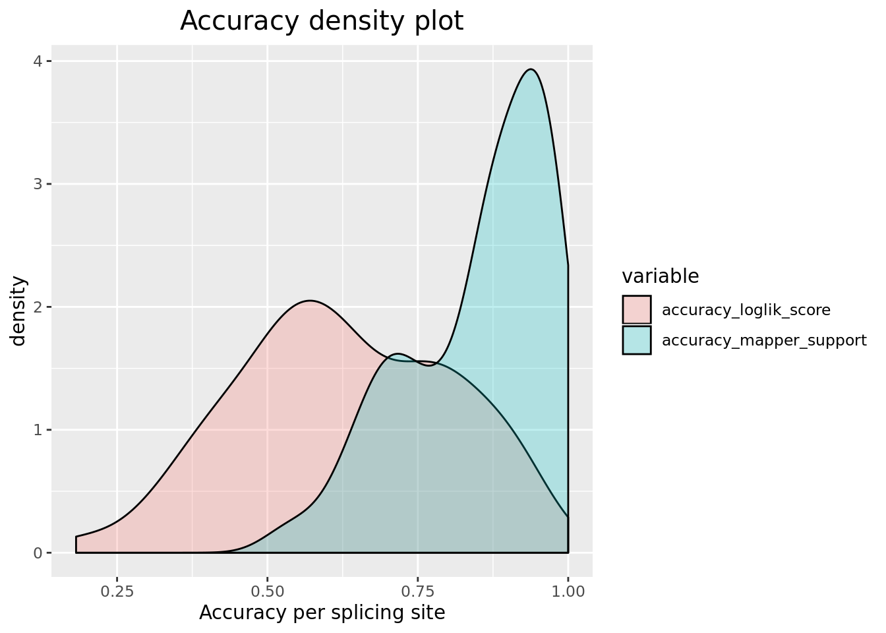

correct_prodiction_f15_t4_t_likelihood
Yupei You
Created: 23 Sep 2019, last updated: 23-September-2019 00:09
Last updated: 2019-09-23
Checks: 6 1
Knit directory: workflowr/
This reproducible R Markdown analysis was created with workflowr (version 1.4.0). The Checks tab describes the reproducibility checks that were applied when the results were created. The Past versions tab lists the development history.
The R Markdown is untracked by Git. To know which version of the R Markdown file created these results, you’ll want to first commit it to the Git repo. If you’re still working on the analysis, you can ignore this warning. When you’re finished, you can run wflow_publish to commit the R Markdown file and build the HTML.
Great job! The global environment was empty. Objects defined in the global environment can affect the analysis in your R Markdown file in unknown ways. For reproduciblity it’s best to always run the code in an empty environment.
The command set.seed(20190306) was run prior to running the code in the R Markdown file. Setting a seed ensures that any results that rely on randomness, e.g. subsampling or permutations, are reproducible.
Great job! Recording the operating system, R version, and package versions is critical for reproducibility.
Nice! There were no cached chunks for this analysis, so you can be confident that you successfully produced the results during this run.
Great job! Using relative paths to the files within your workflowr project makes it easier to run your code on other machines.
Great! You are using Git for version control. Tracking code development and connecting the code version to the results is critical for reproducibility. The version displayed above was the version of the Git repository at the time these results were generated.
Note that you need to be careful to ensure that all relevant files for the analysis have been committed to Git prior to generating the results (you can use wflow_publish or wflow_git_commit). workflowr only checks the R Markdown file, but you know if there are other scripts or data files that it depends on. Below is the status of the Git repository when the results were generated:
Ignored files:
Ignored: analysis/figure/
Untracked files:
Untracked: analysis/Meeting/
Untracked: analysis/Reading/
Untracked: analysis/Software/
Untracked: analysis/TALON.Rmd
Untracked: analysis/Workflow/
Untracked: analysis/f15_t4_t_likelihood.Rmd
Unstaged changes:
Deleted: analysis/10_Apr_Meeting_Summary.Rmd
Deleted: analysis/18_Ma_ with_HJ_and_MK.Rmd
Deleted: analysis/5_Mar_with_HJ_and_MK_.Rmd
Deleted: analysis/FLAIR.Rmd
Deleted: analysis/Journal_club.Rmd
Deleted: analysis/Matthew_2016.Rmd
Deleted: analysis/SquiggleKit.Rmd
Deleted: analysis/Squiggle_alignment.Rmd
Deleted: analysis/Tombo resquiggle.Rmd
Deleted: analysis/Using sequins with RNA sequencing.Rmd
Deleted: analysis/cDNA_R1_102_1.Rmd
Deleted: analysis/cDNA_data_preprocessing.Rmd
Deleted: analysis/cDNA_workflow.Rmd
Deleted: analysis/candidate_generator.Rmd
Deleted: analysis/f15_t4_mad_norm.Rmd
Deleted: analysis/fetch_single_from_tombo.Rmd
Deleted: analysis/get_representative_squiggle.Rmd
Deleted: analysis/inaccurate_transcript_checking.Rmd
Deleted: analysis/self_developed_DTW.Rmd
Deleted: analysis/snakemake_pipline.Rmd
Note that any generated files, e.g. HTML, png, CSS, etc., are not included in this status report because it is ok for generated content to have uncommitted changes.
There are no past versions. Publish this analysis with wflow_publish() to start tracking its development.
Introduction
I selected 32 transcripts with depth between 30 ~ 3001. In this page, I used t distribution with degree of freedom = 1 to calculate the distance between observed data and simulated squiggles.
library(ggplot2)
library(reshape2)
datapath = "/home/ubuntu/PhD_proj/pipeline/Validation/"
tested_tranID = read.table(paste0(datapath,"tested_transID.txt"),header = F)[,1]
print(tested_tranID) [1] R1_102_1 R1_13_1 R1_22_2 R1_31_2 R1_33_1 R1_33_2 R1_41_1
[8] R1_41_2 R1_71_2 R1_91_1 R1_92_2 R2_116_3 R2_117_1 R2_117_3
[15] R2_140_1 R2_150_1 R2_26_1 R2_26_2 R2_28_1 R2_28_2 R2_28_3
[22] R2_32_1 R2_32_2 R2_38_1 R2_38_2 R2_41_1 R2_45_4 R2_59_1
[29] R2_59_2 R2_6_2 R2_7_1 R2_72_1
32 Levels: R1_102_1 R1_13_1 R1_22_2 R1_31_2 R1_33_1 R1_33_2 ... R2_72_1per site accuracy
Firstly, the performance has been evaluated per splicing site.
The overall accruacy across tested splicing sites (splicing sites with only one candidate have been filtered out):
prediction = prediction[which(prediction$num_of_candidates > 1),]
prediction$accuracy_manhattan = prediction$manhattan_correct/prediction$mapped_reads
prediction$accuracy_z_score = prediction$z_score_correct/prediction$mapped_reads
prediction$accuracy_loglik_score = prediction$log_correct/prediction$mapped_reads
prediction$accuracy_mapper_support = prediction$num_of_support/prediction$mapped_reads
############temp!!!! caused by incorrect count of mapper supports####
prediction$accuracy_mapper_support[prediction$accuracy_mapper_support >1] = 1
#print(paste0("Manhattan accuracy: ", mean(prediction$accuracy_manhattan)))
#print(paste0("z_score accuracy: ", mean(prediction$accuracy_z_score)))
print(paste0("log likelihood (t distribution, v = 1) accuracy: ", mean(prediction$accuracy_loglik_score)))[1] "log likelihood (t distribution, v = 1) accuracy: 0.627236406578748"print(paste0("mapper accuracy: ", mean(prediction$accuracy_mapper_support)))[1] "mapper accuracy: 0.851714277016799"The overall accuracy per site is not bad, however it is still lower than the minimap2. This is acceptable because minimap2 pushes the reads aligning to the canonical sites nearby, which may also introduce some indels around the splicing site. Our method could hopefully find better support if a minor splicing site exists. Using log likelihood (under normal assumption) seems the best metrics to calculate the distance.
Accuracy Density plot
data <- melt(prediction[c("accuracy_loglik_score","accuracy_mapper_support")])No id variables; using all as measure variablesggplot(data,aes(x=value, fill=variable)) + geom_density(alpha=0.25) + ggtitle("Accuracy density plot") +xlab("Accuracy per splicing site") + theme(plot.title = element_text(hjust = 0.5, size = 15))
########histogram + density##############
#data <- melt(prediction[c("accuracy_loglik_score","accuracy_manhattan", "accuracy_z_score", "accuracy_mapper_support")])#"accuracy_manhattan", "accuracy_z_score",
#ggplot(data,aes(x=value, fill=variable)) + geom_histogram(alpha = 0.25,position="dodge") + theme(plot.title = element_text(hjust = 0.5)) + geom_density(alpha=0.25) # + ggtitle("Accuracy Density ")Accuracy Density plot: the densities using different distance metrics do not differ greatly from each other. The most interesting part is that we could observe a minor peak for the mapper accuracy, which might be interesting cases for out method.
Boxplot, DTW vs Minimap2 in terms of splicing site selection.
data <- melt(data.frame(
#manhattan = (prediction$manhattan_correct-prediction$num_of_support)/prediction$mapped_reads,
#zscore = (prediction$z_score_correct-prediction$num_of_support)/prediction$mapped_reads,
log_likelihood = (prediction$log_correct-prediction$num_of_support)/prediction$mapped_reads))
ggplot(data,aes(y=value, x=variable, fill = variable)) +
geom_boxplot(alpha=0.4) + labs(y = '',x = '') +
ggtitle("DTW vs minimap2 in splicing site characterisition") +
xlab("Distance metrics") +
ylab("Percentage") +
theme(plot.title = element_text(hjust = 0.5, size = 15)) +
scale_y_continuous(labels=scales::percent)DTW vs minimap2 in splicing site characterisition: In this boxplot, the y axis is calculated by \[ \frac{\#\ of\ correctly \ assign\ squiggles\ by\ DTW - \#\ of\ reads\ correctly\ mapped\ to\ the\ same\ splicing\ site\ by\ minimap2}{\#\ of\ reads\ mapped\ to\ the\ splicing\ site}\]. Positive value means out method correctly assigns more junction reads than minimap2. The plot shows that they are very similar, some outliers are observed and need further investigation.
Per squiggle accuracy
In this section, the performance is evaluated over each squiggle assignment.
library(ggplot2)
library(reshape2)
#load file
ncol = 50
#score_f15_t4 = read.csv(file = "~/PhD_proj/pipeline/Validation/score_f15_t4_merge.csv",header = F,col.names = seq(1, ncol))
score_f15_t4 = read.csv(file = "~/PhD_proj/pipeline/Validation/f15_t4_t_likelihood_merge.csv",header = F,col.names = seq(1, ncol))
while(sum(is.numeric(score_f15_t4$X1)) > 0 || sum(is.na(score_f15_t4$X1))) {
ncol = ncol + 10
score_f15_t4 = read.csv(file = "~/PhD_proj/pipeline/Validation/f15_t4_t_likelihood_merge.csv",header = F,col.names = seq(1, ncol))
}
# fast5 filenames
filenames = score_f15_t4$X1
#junctionID = c(1)
#for (i in 8900:length(filenames)){
# if (filenames[i] == filenames[i-1]){
# junctionID[i] = junctionID[i-1] + 1
# }else{
# junctionID[i] = 1
# }
#}
# likelihood_score (single candidate junctions removed)
likelihood_score = cbind(filenames, score_f15_t4[,seq(5,ncol,3)])
likelihood_score = likelihood_score[!is.na(likelihood_score$X5),]
has_multi_candidates = apply(likelihood_score[,-1],1,function(x) sum(!is.na(x)) > 1)
likelihood_score = likelihood_score[has_multi_candidates,]
# distance of best matched candidate
min_dist = apply(likelihood_score[,-1],1,function(x) min(x, na.rm=T))
# bool that the corresponding prodiction is correct or not
correctness = apply(likelihood_score[,-1],1,which.min) == 1The overall accruacy across tested squiggles (squiggles with only only candidates have been filtered out):
print(sum(correctness)/length(correctness))[1] 0.6335404Best DTW distance distribution
data <- data.frame(likelihood_score,min_dist = min_dist, correctness = correctness)
# distribution of min dist (density plot)
ggplot(data,aes(x=min_dist, fill=correctness)) +
scale_fill_manual(labels = c("False positives", "True Positives"), values = c("blue", "red")) +
guides(fill=guide_legend(title=NULL,reverse = T)) +
geom_histogram(aes(y=3*..count../sum(..count..)),alpha = 0.7,position="dodge") +
geom_density(alpha=0.3) +
ggtitle("Distribution of best match distance") +
xlab("Smallest distance metrics") +
ylab("Density") +
scale_y_continuous(sec.axis = sec_axis(~./3, name = "Persentage (histgram)")) +
xlim(1,3) +
theme(plot.title = element_text(hjust = 0.5, size = 15))`stat_bin()` using `bins = 30`. Pick better value with `binwidth`.Warning: Removed 1 rows containing missing values (geom_bar). Plot Distribution of best match distance: This plot shows the distribution of the best (smallest) distance across all the candidates for each junction squiggle.The squiggles are grouped by whether or not it is correctly assigned to the correct candidate.
Plot Distribution of best match distance: This plot shows the distribution of the best (smallest) distance across all the candidates for each junction squiggle.The squiggles are grouped by whether or not it is correctly assigned to the correct candidate.
true_reads = likelihood_score[correctness == T,]
false_reads = likelihood_score[correctness == F,]
true_reads_dist = apply(true_reads[,-1],1,function(x) min(x, na.rm = T))
false_reads_dist = apply(false_reads[,-1],1,function(x) min(x, na.rm = T))
false_diff = apply(false_reads[,-1],1,function(x) abs(min(x, na.rm=T) - x[1]))
#false_diff = apply(false_reads[,-1],1,function(x) abs(min(x, na.rm=T) - x[order(x)[2]]))
true_diff = apply(true_reads[,-1],1,function(x) abs(x[1] - x[order(x)[2]]))
ggplot() +
geom_density(aes(x = false_diff,fill = "false positive"), alpha = 0.3) +
geom_density(aes(x = true_diff, fill = "true positive"), alpha = 0.3) +
scale_color_manual("Legend",values = c("red","blue"),aesthetics = "fill") +
xlab("Difference of distance") +
ggtitle("Distribution of difference between true candidate \n and best aligned false candidate") +
theme(plot.title = element_text(hjust = 0.5, size = 15))-1.png) For the squiggles that assigned to false candidates, the difference between the chosen one and the true one is relatively smaller, which is expected.
For the squiggles that assigned to false candidates, the difference between the chosen one and the true one is relatively smaller, which is expected.
2d density plot:
ggplot() +
geom_point(aes(x=true_reads_dist,y=true_diff,color = "true positive"),size = 0.01,alpha = 0.2) +
geom_point(aes(x=false_reads_dist,y=false_diff,color = "false positive"),size = 0.01,alpha = 0.8) +
geom_density_2d(aes(x=true_reads_dist,y=true_diff,fill = "true positive",color = "true positive")) +
geom_density_2d(aes(x=false_reads_dist,y=false_diff,fill = "false positive",color = "false positive")) +
xlab("hardness of matching (distance)")+
ylab("confidence (difference of distance)")+
scale_color_manual("Legend",values = c("blue","red")) +
ylim(0,1) +
xlim(1,3)-1.png) y-axis: match score difference (true vs best false) x-axis: score of best matched candidate
y-axis: match score difference (true vs best false) x-axis: score of best matched candidate
true_reads = likelihood_score[correctness == T,]
false_reads = likelihood_score[correctness == F,]
true_reads_dist = apply(true_reads[,-1],1,function(x) min(x, na.rm = T))
false_reads_dist = apply(false_reads[,-1],1,function(x) min(x, na.rm = T))
#false_diff = apply(false_reads[,-1],1,function(x) abs(min(x, na.rm=T) - x[1]))
false_diff = apply(false_reads[,-1],1,function(x) abs(min(x, na.rm=T) - x[order(x)[2]]))
true_diff = apply(true_reads[,-1],1,function(x) abs(x[1] - x[order(x)[2]]))
ggplot() +
geom_density(aes(x = false_diff,fill = "false positive"), alpha = 0.3) +
geom_density(aes(x = true_diff, fill = "true positive"), alpha = 0.3) +
scale_color_manual("Legend",values = c("red","blue"),aesthetics = "fill") +
xlab("Difference of distance") +
ggtitle("Distribution of difference between best aligned candidate \n and second best aligned false candidate") +
theme(plot.title = element_text(hjust = 0.5, size = 15))-1.png) In real data analysis, alignment score of true candidate is unknown. But we can calculate the difference between the best and second best score. Compare this plot to the previous one, the density peak for the false postives are much higher, which means the true candidate can not always get the second best score in false positives. the true positive score density should remain the some to the previous one.
In real data analysis, alignment score of true candidate is unknown. But we can calculate the difference between the best and second best score. Compare this plot to the previous one, the density peak for the false postives are much higher, which means the true candidate can not always get the second best score in false positives. the true positive score density should remain the some to the previous one.
2d density plot:
ggplot() +
geom_point(aes(x=true_reads_dist,y=true_diff,color = "true positive"),size = 0.01,alpha = 0.2) +
geom_point(aes(x=false_reads_dist,y=false_diff,color = "false positive"),size = 0.01,alpha = 0.8) +
geom_density_2d(aes(x=true_reads_dist,y=true_diff,fill = "true positive",color = "true positive")) +
geom_density_2d(aes(x=false_reads_dist,y=false_diff,fill = "false positive",color = "false positive")) +
xlab("hardness of matching (distance)")+
ylab("confidence (difference of distance)")+
scale_color_manual("Legend",values = c("blue","red")) +
ylim(0,1) +
xlim(1,3)-1.png)
y-axis: match score difference \[|best\ score - second\ best\ score|\]
x-axis: score of best matched candidate
sessionInfo()R version 3.4.4 (2018-03-15)
Platform: x86_64-pc-linux-gnu (64-bit)
Running under: Ubuntu 18.04.3 LTS
Matrix products: default
BLAS: /usr/lib/x86_64-linux-gnu/blas/libblas.so.3.7.1
LAPACK: /usr/lib/x86_64-linux-gnu/lapack/liblapack.so.3.7.1
locale:
[1] LC_CTYPE=en_AU.UTF-8 LC_NUMERIC=C
[3] LC_TIME=en_AU.UTF-8 LC_COLLATE=en_AU.UTF-8
[5] LC_MONETARY=en_AU.UTF-8 LC_MESSAGES=en_AU.UTF-8
[7] LC_PAPER=en_AU.UTF-8 LC_NAME=C
[9] LC_ADDRESS=C LC_TELEPHONE=C
[11] LC_MEASUREMENT=en_AU.UTF-8 LC_IDENTIFICATION=C
attached base packages:
[1] stats graphics grDevices utils datasets methods base
other attached packages:
[1] reshape2_1.4.3 ggplot2_3.2.1
loaded via a namespace (and not attached):
[1] Rcpp_1.0.1 knitr_1.23 magrittr_1.5 workflowr_1.4.0
[5] MASS_7.3-49 munsell_0.5.0 colorspace_1.4-1 rlang_0.4.0
[9] plyr_1.8.4 stringr_1.4.0 tools_3.4.4 grid_3.4.4
[13] gtable_0.3.0 xfun_0.7 withr_2.1.2 git2r_0.25.2
[17] htmltools_0.3.6 yaml_2.2.0 lazyeval_0.2.2 rprojroot_1.3-2
[21] digest_0.6.19 tibble_2.1.3 crayon_1.3.4 fs_1.3.1
[25] glue_1.3.1 evaluate_0.14 rmarkdown_1.13 labeling_0.3
[29] stringi_1.4.3 compiler_3.4.4 pillar_1.4.2 scales_1.0.0
[33] backports_1.1.4 pkgconfig_2.0.2 The upperbound was set in order to reduce the run time. There are totally 34 transcripts have 30 ~ 300 mapped reads, I removed R1_92_1 and R2_60_2 from the list because it runs too slowly (large number of reads and exon junctions)↩